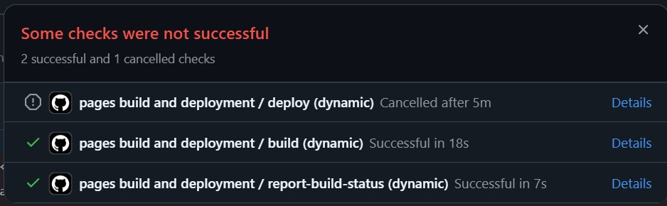

This my website for CIS 155. It's just the progression of my assignments and projects throughout the course. It's going to be mid.
Well, I guess this works. I need to rant for a sec. This week has been abysmal.
*/I just needed to scream internally a bit since I can't really do it out loud./*
I put this in my progression tab but holy crap, I'm overwhelmed with everything. This month my manager scheduled me on Mondays even though I told him I have class.
Since I have a people facing job and it's super exhausting mentally and emotionally after constant 9 hours. And it doesn't help that we also only get our half hour lunch break and no other breaks cause it's too busy.
For whatever reason, even though there's another person with the same role as me, she gets to just count and not do the people facing part, which is frustrating.
And I can't bring it up because they will pull some excuse out of their ass like it's "what I need to work on." and then tell my coworkers and it'll look bad. I'm not a people person and I'm overwhelmed.
It's vaccine season and then just busy season in general and it feels like I'm doing 3 things at once with little to no help. Since I have to do the front, bag the meds, and hang them up alphabetically.
I'm constantly inturrupted by having to give people picking up their medications. But then since I have no help, and there's 3 people filling and the pharmacist checking, I end up with a ton of stuff to bag. But have no space since I haven't been able to hang it up.
And then on Thursday, my mom fell for those email scams... You know, the ones that have you get giftcards and send the photos to them. Yeah... those.
They pretended to be the new pastor at the church they go to. And my mom somehow fell for it. I told her it was suspicious and a little weird. And she got all defensive about it.
She authorized it and stuff, so the credit card company can't or won't do anything about it. So she called Apple and some had been used already.
So that was like $600 lost because she's gullible and didn't listen to me. And so tension is high in my house cause my dad is really not pleased.
They were arguing while I was taking my midterm for my Medical Terminology class. Which just adds to the stress.
Yesterday at work was super busy cause the Island shuts down for a trick or treat thing downtown where I work.
And since it's the weekend. I think we did like 400 scrips and constant people. I'm exhausted and burnt out. I knew this would happen. It happens every time.
Okay anyway. Assignment.
Link to separate webpage: Redirect to Youtube for the most accurate thing I've seen in a while.
https://youtu.be/bXo4zaIKecM?si=2yk05vE4iJMoY0Lm
Converted to a fluid webpage, images and such on the Progression tab should be fluid now.
Assignment Progression
The progression of my assignments
This is the start of my assignments, it's janky.
This is a test page. Kind of, it became more like a diary of the progression of this site.
I tried to log everything I did while I progressed it. I guess it kind of worked.
Today is 10/4/25
I am using Visual Studio Code to make these since it's easier to read. Apparently the more spread out an HTML thing is, the larger the file becomes. But at least it's more legible.
- Github took 5 minutes to redeploy my original edits.
- So I'm trying this to see if it'll redeploy
- If you're reading this it means that it decided to work.
- In which case... yippee.

This part of Week 3 assignment they wanted me to add an embed link so I used the song I was listening to at the time to link because I couldn't really think of anything else to add.
The song I had been listening to was Warcry by Chase Atlantic. Released on October 3rd, 2025. It had just come out at the time of writing this.
Open Warcry (Explicit) on YouTube
Today is 10/15/25 And we're starting CSS. And stuff for our final project. So I changed a bunch of things.
First of all, I made it multi tabbed for the final project work/other assignments with help the VSC copilot. I wanted it to be kind of a diary of sorts this page.
Then I used that code to make a base layout for the website. It's still pretty mid.
I actually changed the html file from the original index.html cause I forgot what I had done with it and figured it would just be easier to move it to a tab with the template I had made.
This failed and broke everything so I had to change it back. But it's fine now.
Edited some colors, moved the other stuff, deleted the old html. Hopefully github doesn't have a panic attack, turns out it did.
I added basic things and moved things to this tab and will have to go back and think of what stuff to fill the other ones with.
I have no idea where I'm supposed to use the stylesheet rather than the web.css file but I guess I'll figure it out at some point or just only use the web.css one.
10/21/25: We are unlucky and there was an AWS outage so Canvas was down on Monday 10/20/25. And then right before that, between 10/13/25 and 10/18/25 all of OC was down so we couldn't use Canvas then either. We're almost to midterms, unfortunate.
10/23/25: I've made my fugly website thing kind of, it's hard to make because it physically hurts my eyes to look at. The problem with having multiple pages is that everything is cramped together.
I also have the memory retention of a goldfish. So I can't actually remember how to do anything. And my HTML file here is getting crowded and it's getting harder to read even like this.
11/1/25: I am struggling with balancing everything, between my midterm and work and home life. I was at work all of yesterday and finally have a day off but I have a lot to do. I don't know what I was thinking.
On Thursday, my mom got scammed by a person impersonating the new pastor at church through email. That was kind of rough cause I was taking my midterm when my mom realized it and she and my dad argued for a long time about it. I WARNED HER that it was suspicious.
My manager scheduled me every Monday this month even though I told him that I have class. So that's great. I give up tbh.